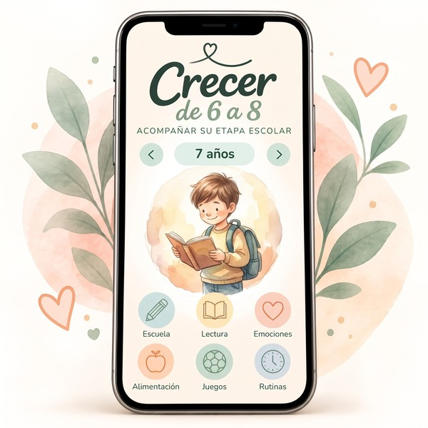

«No sé cuánto ayudarlo con la tarea»
Querés estar presente, pero también necesitás que pruebe, se equivoque y descubra cómo resolver las cosas por sí mismo.
Entre los 6 y los 8 llegan nuevos desafíos: leer con más fluidez, hacer tareas, resolver cuentas, cuidar sus amistades y ganar independencia. Crecer de 6 a 8 te acerca ideas y herramientas para acompañar cada etapa con más claridad.
Quiero acceder a Crecer de 6 a 8
Acceso completo a la aplicación. Información general y educativa para acompañar el crecimiento.

La escuela, las amistades, las rutinas y la autonomía empiezan a ocupar otro lugar. Y no siempre es fácil saber cuánto intervenir o cuándo dar espacio.
Querés estar presente, pero también necesitás que pruebe, se equivoque y descubra cómo resolver las cosas por sí mismo.
Comidas, viandas, lectura, descanso y pantallas: organizar el día familiar puede sentirse como otra tarea más.
Los enojos, los miedos, las amistades y los conflictos aparecen. Escucharlo y ayudarlo a poner en palabras lo que siente también se aprende.
La aplicación organiza información y propuestas para esta etapa escolar. Podés consultar el tema que necesitás, elegir una actividad y llevarla a la vida cotidiana, sin convertir cada momento en una clase.
Quiero acompañar esta etapa →Contenidos para consultar y propuestas para compartir, pensados para acompañar a chicos de 6, 7 y 8 años.
Etapas de los 6, 7 y 8 años, logros habituales para observar y orientación para acompañar su autonomía y desarrollo.
Actividades de lectura, sonidos y sílabas, comprensión de textos, escritura, sumas, restas, multiplicaciones e inglés.
Ideas para desayunos, recreos, meriendas y comidas familiares, junto con pautas de alimentación saludable en edad escolar.
Herramientas para reconocer emociones, conversar sobre amistades y conflictos, abordar el bullying y enseñar el cuidado del cuerpo.
Ideas para organizar el sueño, el uso de pantallas, el movimiento diario, las tareas y las responsabilidades en casa.
Biblioteca de cuentos, juegos sin pantallas para viajes y esperas, ejercicios de relajación guiada y desafíos de hábitos de 21 días.
Los contenidos se organizan para acompañar cambios concretos de la etapa, sin esperar que todos los chicos avancen igual.
Un año de nuevas rutinas, primeros desafíos escolares y mucha práctica cotidiana.
Empieza a resolver más situaciones por su cuenta y a participar en decisiones cotidianas.
Crece su necesidad de independencia, organización y participación en la vida familiar.
Una idea para esta etapa
«Quiero que aprenda a resolver sus cosas, pero también que sepa que siempre estoy para acompañarlo».
Tené a mano ideas para la escuela, la alimentación, las emociones y las rutinas. Elegí por dónde empezar y acompañá cada avance con paciencia, confianza y espacio para aprender.
Importante: Crecer de 6 a 8 ofrece información general y educativa. No reemplaza la consulta con tu pediatra ni con otros profesionales de la salud.